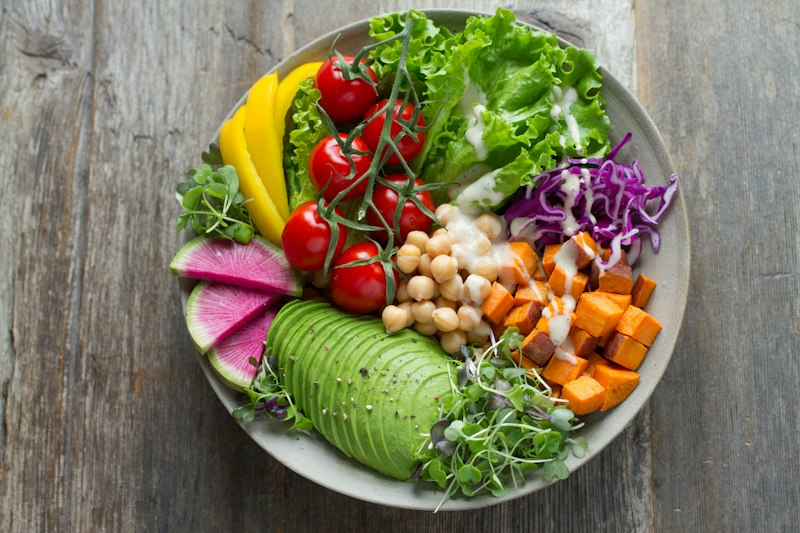

Sua próxima refeição
começa por aqui.
Alimentos preparados para consumo em casa, em Carapicuíba. Consulte as opções do dia e combine seu pedido diretamente pelo WhatsApp.
Cardápio, preços e disponibilidade confirmados no atendimento.
 Inspiração para a sua mesa · foto ilustrativa
Inspiração para a sua mesa · foto ilustrativaMais praticidade
na hora de comer.
Uma refeição faz parte dos pequenos momentos do dia. Fale com Carlos da Silva para conhecer os alimentos disponíveis e encontrar uma opção para sua rotina.
Quero conhecer as opções →
Cores à mesa

Inspiração para o dia
Peça em três passos.
Consulte as opções
Envie uma mensagem e pergunte sobre cardápio, ingredientes e disponibilidade.
Combine os detalhes
Confirme valores, quantidade, forma de pagamento e possibilidade de entrega ou retirada.
Confirme seu pedido
Revise os detalhes com o atendimento. O pedido depende da confirmação expressa da empresa.
Conheça a empresa.
Carlos da Silva atua no fornecimento de alimentos preparados preponderantemente para consumo domiciliar. A empresa foi fundada em 30 de março de 2020, em Carapicuíba, São Paulo.
Saiba mais sobre nós →Antes de fazer seu pedido
Onde consulto o cardápio e os preços?
Diretamente pelo WhatsApp. Opções, valores e disponibilidade são informados antes da confirmação.
Como saber se meu endereço é atendido?
Informe seu bairro e endereço ao atendimento. Confirme a possibilidade de entrega, eventual taxa, prazo ou alternativa de retirada antes de pedir.
Tenho alergia ou restrição alimentar. Como proceder?
Informe sua restrição antes do pedido e consulte ingredientes e condições de preparo. Não presuma ausência de alérgenos ou de contaminação cruzada.
Como alterar ou cancelar um pedido?
Entre em contato pelo telefone ou WhatsApp assim que possível. A solicitação será analisada considerando a etapa de preparo e as condições informadas no atendimento.
A próxima refeição
pode começar com um oi.
Rua Cunha Bueno, 67 · Vila Anunciata
Carapicuíba/SP · CEP 06361-370